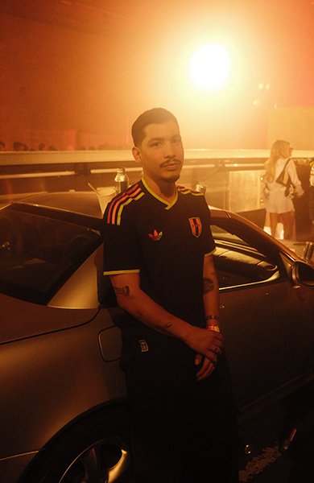

QUÉ ES EL BLOKECORE: LA TENDENCIA DE MODA FÚTBOL QUE LLEGA A LIMA DESDE LOS ÁNGELES
Descubre qué es el blokecore, la tendencia que mezcla camisetas de fútbol con moda
urbana. Te cuento cómo se vive en Los Ángeles y por que ya está llegando a Lima.
"Sin fútbol no existiría Adidas."
Esa fue la frase que nos dijeron en uno de los eventos en Los Angeles. Y se quedó conmigo.
Honestamente, hizo que todo tuviera sentido: el fútbol, las camisetas y la moda blockcore conectan con algo mucho
más grande que solo ropa.
Hoy, el blockcore continúa creciendo como una de las tendencias mas fuertes del street style. Los football jerseys y
las piezas inspiradas en el deporte ya no viven solo en las canchas: ahora forman parte de outfits cotidianos,
conciertos y espacios culturales.
En ciudades como Los Ángeles, esta estética se siente natural. Y poco a poco, tambien empieza a ganar espacio en
Lima.
¿QUÉ ES EL BLOKECORE?
El blokecore es una tendencia que mezcla el fútbol con la moda urbana. Toma elementos deportivos -como
camisetas de fútbol, football jerseys y piezas retro inspiradas en equipos- y los lleva al streetwear cotidiano.

PERÚ VS. LOS ÁNGELES: DOS FORMAS DE VIVIR EL FÚTBOL
En Perú, las camisetas de fútbol todavía suelen asociarse más a contextos específicos:
Partidos
Estadios
Fechas importantes
En Los Ángles, en cambio, forman parte del outfit cotidiano.
No importa la edad, el estilo o la personalidad. Las football jerseys se integran de manera mucho más libre al street
style.
Y creo que ese cambio de mentalidad es lo que poco a poco también está empezando a pasar en Lima.
EL ROL DE ADIDAS ORIGINALS FOOTBALL EN EL BLOKECORE
Si algo queda claro, es que esta tendencia no apareció de la nada.
Adidas Originals Football lleva años conectando el fútbol con la cultura urbana. Las camisetas, las siluetas clasicas
y las tres franjas han construido durante décadas este puente entre deporte, identidad y streetwear.